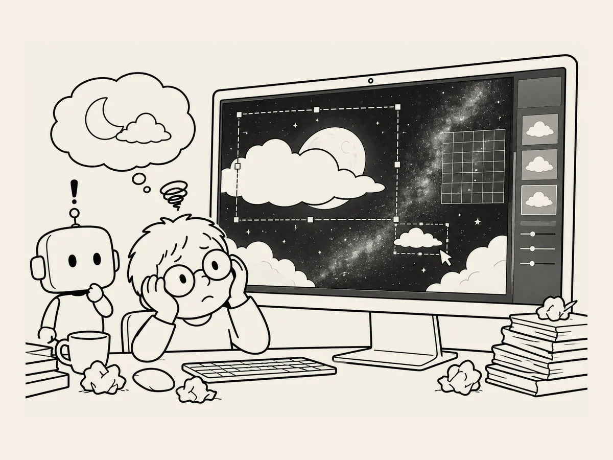

10.
I Tried to Move One Cloud and Ended Up at the Milky Way.
The illustration was finished.
That's how people are.
Once something is finished, you always want to add just one more thing.
I thought it would look great if a single cloud slowly drifted in front of the moon.
I told AI.
"Let's make a cloud slowly drift in front of the moon."
That's when things started getting complicated.
First, I had to make the cloud separately.
Apparently, the area behind the cloud had to be transparent if I wanted to place it over the illustration.
"Okay. Make it."
The cloud appeared.
I put it in front of the moon.
Strange.
Too big.
I made it smaller.
The position looked wrong.
I moved it.
Now something looked even stranger.
I made it again.
This time, it didn't match the mood of the original illustration.
I made it move more slowly.
Still awkward.
Hang on.
All I wanted was one cloud drifting by.
Somehow, I'd ended up wrestling with a cloud for ages.
Then, for some reason, I decided I wanted to try adding the Milky Way too.
"Should we add just a little Milky Way?"
We did.
This time, a strange rectangular grid appeared in the night sky.
What is this?
Now I was fixing the Milky Way.
"Take it all out."
I removed the cloud.
I removed the Milky Way.
The original screen came back.
Hmm.
The first version was the best.
